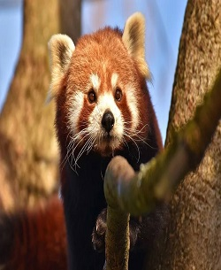
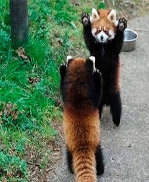
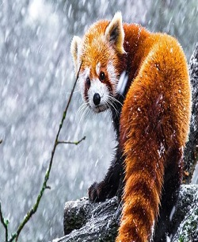

Habitat

Vive generalmente en los bosques templados húmedos de zonas altas y con abundante bambú. Los pandas rojos son animales muy habilidosos y acrobáticos que viven principalmente en los árboles. Viven en territorios, a menudo solos, y solo rara vez viven en parejas o en grupos de familias. Son muy tranquilos y se comunican mediante gritos estridentes.
Ubicación Geografica

El panda rojo es nativo de las regiones montañosas del Himalaya, Bután, el sur de China, la India, Nepal, Birmania. aunque hay indicios de registro fósil que comprueban su antigua existencia en América del Norte.
Habitos Alimenticios
Su dieta se compone de alrededor de dos tercios de bambú, pero también come bayas, frutas, hongos, raíces, líquenes y se sabe que complementan su dieta con crías de ave, huevos, insectos y pequeños roedores en algunas ocasiones. Pero en cautiverio comen fácilmente carne. Son excelentes escaladores y realmente hace poco más que comer y dormir debido a su dieta baja en calorías. Los troncos de bambú son digeridos con más facilidad que las hojas y con una mayor digestibilidad en el verano y el otoño, intermedia en la primavera, y baja en invierno. Esas variaciones se correlacionan con el contenido nutricional de bambú. El panda rojo digiere mal el bambú, en especial la pasta y los componentes de la pared celular, ya que su digestión microbiana desempeña solo un papel secundario en su estrategia digestiva. El tránsito de bambú por el intestino del panda rojo es muy rápido (2-4 horas). Para sobrevivir en la dieta de mala calidad, el panda rojo ha de elegir a los bambúes de alta calidad y comer gran cantidad de hojas y troncos que pasan por el tratamiento digestivo regularmente rápido para maximizar el aporte de nutrientes.
Habito Reproductivo
Son animales tímidos y solitarios salvo en época de apareamiento. Las hembras suelen tener crías en primavera y en verano, normalmente entre una y cuatro. Los pandas jóvenes se quedan en su guarida hasta los 90 días, mientras sus madres cuidan de ellos. Los machos apenas se interesan por su descendencia.
Estado de Conservación
Hay una población estimada de 2500 individuos maduros, se le considera una especie en peligro de extinción según la Unión Internacional para la Conservación de la Naturaleza (UICN)
Miden de 30 a 60 cm. Los machos pesan de 4,5 a 6,2 kilogramos, las hembras de 3 a 4,5 kg. Tienen el pelaje de color marrón rojizo, largo y suave en la parte superior, que se vuelve oscuro en la parte inferior. En el rostro tiene manchas de color blanco similares a las de un mapache, pero cada individuo tiene diferentes marcas faciales. Su cabeza es redondeada con orejas rectas de mediano tamaño, nariz negra, y los ojos muy oscuros, casi negros. Su cola, larga y felpuda con seis anillos de color ocre o rojo, le proporciona un equilibrio y una excelente habilidad sobre los resbaladizos musgos y líquenes que cubren los árboles. Las patas son cortas y de color negro. También tiene garras retráctiles y, como el panda gigante, un "falso pulgar", que es en realidad una extensión de los huesos de la muñeca. Posee un pelaje grueso en la planta de los pies que ofrecen protección contra el frío y oculta los genitales.
| Nombre | Nombre Cientifico | Alimento Favorito | Estado |
| Panda Rojo | Ailurus fulgens | Bambú | Peligro de Extinción |